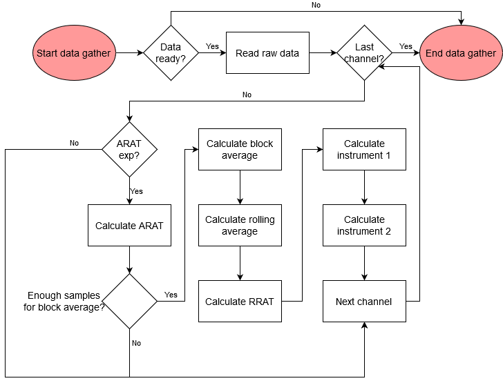
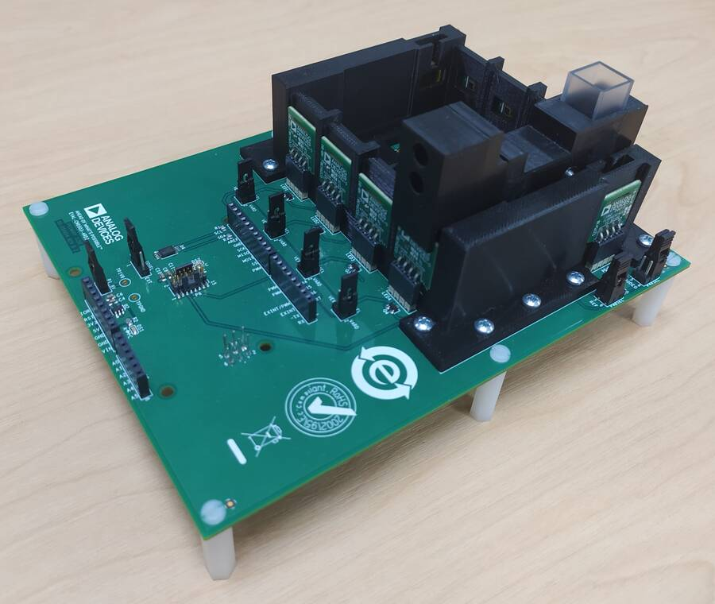
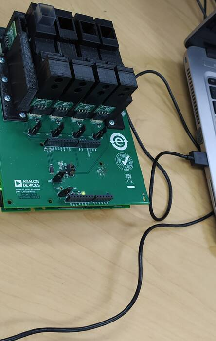
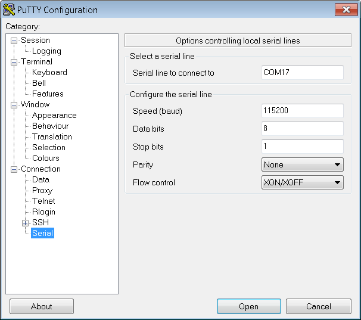
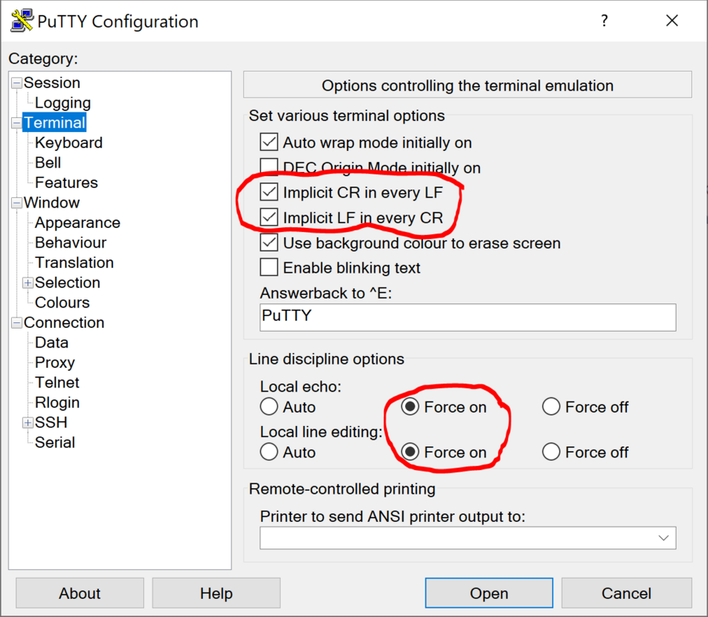
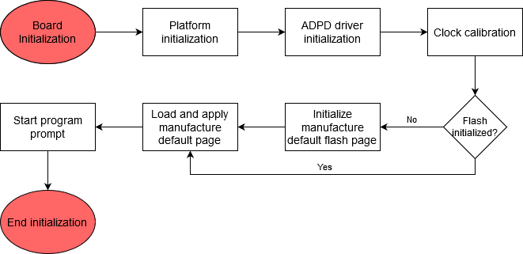
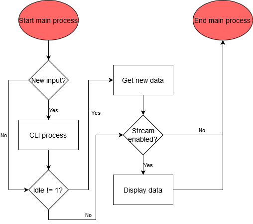

Software User Guide
The ADuCM3029_demo_cn0503 project provides a solution to get multiple liquid parameters (for example, turbidity, pH, fluorescence, etc.) using the EVAL-CN0503-ARDZ and the EVAL-ADICUP3029. It uses a complete multimodal sensor front end, stimulating up to eight LEDs and measuring the return signal on up to eight separate current inputs using photo-diodes. The board is controlled via a command line interface (CLI), Python scripts that provide high level functions or a Python GUI that communicates with the firmware via serial terminal.
General Description
The ADuCM_demo_cn0503 project uses EVAL-CN0503-ARDZ to provide a method to determine properties of liquids, for example, turbidity, fluorescence, and pH. To do this, the application must configure the ADPD4101 sensor, read the data from it and perform calculations on the data to improve SNR and pre-process it to units as close to the desired measurement as possible.
The application configures the device to stimulate LEDs and read the PDs in 4 time slots, each corresponding to one of the optical paths present on the board. It enables 2 ADC channels per time slot to measure the light beam before and after passing through the substance. This means that a packet of 8 samples of data come from the ADC once per sampling period.
The samples can then be plugged into a user defined equation that can include any of the samples and any random constant to generate a ratio, which the application defines as the absolute ratio. Before being displayed or used any further the absolute ratio is filtered by a block average filter and a rolling average filter to digitally increase the SNR and take out unwanted frequencies. The bandwidth of the rolling average filter can be set by the user. After getting the absolute ratio that describes the liquid that is now in the vat, it can be used to compare it to the baseline measurement using either 1 - (absolute ratio / baseline) or (absolute ratio / baseline) equations. The user has to input the baseline for each optical path as well as the equation from these options. The application defines this result as the relative ratio. The application then has 2 more options of processing the information in the form of two 5th order polynomials in which the relative ratio can be inserted as the variable. The coefficients of each of the polynomial members are also input by the user via the CLI. To be noted that the result of the first equation is the variable for the second equation. This gives the user a high degree of flexibility in getting data out of the platform.
Demo Requirements
The following is a list of items needed in order to replicate this demo.
Hardware
Micro USB to USB cable
PC or Laptop with a USB port
3D printed mechanical fixtures described in the Hardware User Guide
Software
Serial Terminal Program such as Putty or Tera Term
Setting up the Hardware
Set up the the EVAL-CN0503-ARDZ as shown in the Hardware User Guide.
Connect the board to the EVAL-ADICUP3029 via the Arduino headers.
Connect a micro-USB cable to P10 connector of the EVAL-ADICUP3029 and connect it to a computer. The final setup should look similar to the picture below.

Configuring the Software
The ADuCM3029_demo_cn0503 does not need any software configuration. It can be built and run as is.
Outputting Data
A serial terminal is an application that runs on a PC or laptop that is used to display data and interact with a connected device (including many of the Circuits from the Lab reference designs). The device’s UART peripheral is most often connected to a UART to USB interface IC, which appears as a traditional COM port on the host PC/laptop. (Traditionally, the device’s UART port would have been connected to an RS-232 line driver/receiver and connected to the PC via a 9-pin or 25-pin serial port). There are many open-source applications, and while there are many choices, typically we use one of the following:
Before continuing, please make sure you download and install one of the above programs.
There are several parameters on all serial terminal programs that must be setup properly in order for the PC and the connected device to communicate. Below are the common settings that must match on both the PC side and the connected UART device.
COM Port - This is the physical connection made to your PC or Laptop, typically made through a USB cable but can be any serial communications cable. You can determine the COM port assigned to your device by visiting the device manager on your computer. Another method for identifying which COM port is associated with a USB-based device is to look at which COM ports are present before plugging in your device, then plug in your device, and look for a new COM port.
Baud Rate - This is the speed at which data is being transferred from the connected device to your PC. These parameters must be the same on both devices or data will be corrupted. The default setting for most of the reference designs is 115200.
Data Bits - The number of data bits per transfer. Typically UART transmits ASCII codes back to the serial port so by default this is almost always set to 8-Bits.
Stop Bits - The number of “stop” conditions per transmission. This usually set to 1, but can be set to 2 for redundancy.
Parity - Is a way to check for errors during the UART transmission. Unless otherwise specified, set parity to “none”.
Flow Control - Is a way to ensure that data lose between fast and slow devices on the same UART bus are not lost during transmission. This is typically not implemented in a simple system, and unless otherwise specified, set to “none”.
In many instances there are other options that each of the different serial terminal applications provide, such as local line echo or local line editing, and features like this can be turned on or off depending on your preferences. This setup guide will not go over all the options of each tool, but just the minor features that will make it easier to read back data from the connected devices.
Example Setup using Putty
Plug in your connected device using a USB cable or other serial cable.
Wait for the device driver of the connected device to be installed on your PC.
Open your device manager and check which COM port was assigned to your device.
Open up your serial terminal program (Putty for this example). Click on the serial configuration tab or window, and input the settings to match the requirements of your connected device. The default baud rate for most of the reference designs is 115200. Make sure that you use the correct baud rate for your application.
Ensure you click on the checkboxes for Implicit CR in every LF and Implicit LF in every CF. Ensure that local echo and line editing are enabled, so that you can see what you type and are able to correct mistakes. (Some devices may echo typed characters - if so, you will see each typed character twice. If this happens, turn off local echo.)
Click on the open button, and as long as your connected device and serial terminal program are setup the same, then you should see data displaying.
Tip
If you see nothing in the serial terminal, try hitting the reset button on the embedded development board.
Available Commands
Typing help after the application has started will display the list of commands:
Function |
Command |
Description |
Example |
Application commands |
|||
HELP |
Display available commands. |
||
REG? XXX |
Read an ADPD register. |
REG? 10A - read register 0x10A |
|
<XXX> = register address in hexadecimal |
|||
REG XXX YYYY |
Write an ADPD register. |
REG 10A 301 - write 0x301 to register 0x10A |
|
<XXX> = register address in hexadecimal |
|||
<YYYY> = register new value in hexadecimal |
|||
MODE? |
Read the data display mode. Return a 4 character code: |
||
CODE - raw data is displayed; |
|||
ARAT - absolute ratio is displayed; |
|||
RRAT - relative ratio is displayed; |
|||
INS1 - data processed for instrument 1 is displayed; |
|||
INS2 - data processed for instrument 2 is displayed. |
|||
MODE XXXX |
Set the data display mode. |
MODE CODE - set display mode to raw codes |
|
XXXX = 4 character code to describe the data display mode. The options are: |
|||
CODE - raw data is displayed; |
|||
ARAT - absolute ratio is displayed; |
|||
RRAT - relative ratio is displayed; |
|||
INS1 - data processed for instrument 1 is displayed; |
|||
INS2 - data processed for instrument 2 is displayed. |
|||
STREAM X |
Start calculating and displaying a stream of data. |
STREAM 10 - stream for 10 values of the output. |
|
X = If 0 or not present enter continuous streaming mode; if X>0 stream data for X values. |
|||
IDLE? |
Queries the idle condition. |
||
IDLE x |
If X=0 or not listed only the terminal stream is terminated, but the application continues sampling. If X=1 stop sampling altogether. |
IDLE 0 - stop streaming, but keep sampling. |
|
ALRM? |
Query alarm status; if returned 0 no alarm is present; |
||
If bit 0 of the returned value is 1 instrument 2 value is below lower threshold; |
|||
If bit 1 of the returned value is 1 instrument 2 value is above higher threshold. |
|||
DEFn? XXXX |
Query operation parameters. |
DEF0? ARAT - query the abslute ratio expression for optical path 0 |
|
n = ID of the required optical path (can be from 0 to 8). |
|||
XXXX = the operation parameter to be queried. The following options exist: |
|||
ARAT = absolute ratio expression in reverse polish notation (RPN); |
|||
RFLT = the digital low pass filter bandwidth applied to the absolute ratio measurements; |
|||
ALRM = the high and low alarm threshold for the INS2 measurements; |
|||
RATB = baseline ratio used in calculating the relative ratio; |
|||
INS1 = the coefficients of the fifth order polynomial used to calculate the first instrument measurements; |
|||
INS2 = the coefficients of the fifth order polynomial used to calculate the second instrument measurements. |
|||
BOOT |
Perform a software reset. |
||
ODR? |
Query the Output Data Rate of the STREAM command. |
||
ODR XX.XX |
Sets Output Data Rate for the STREAM command. |
ODR 2.5 - set output data rate to 2.5 SPS |
|
XX.XX = The new ODR in Hz. It can have only certain values and will round down to them: |
|||
ODR options between 5 Hz and 0.01 Hz and can be calculated by 5/ODR = integer number. |
|||
RATMASK? |
Query the active channels mask. Returns a hexadecimal 8 bit number that has 1 for every active channel and 0 for every hidden channel. |
||
For example if 1 - only optical path 0 is turned on; if 3 - Optical paths 0 and 1 are turned on and the rest are hidden; etc. |
|||
RATMASK XX |
Set the active channels mask. |
RATMASK F - turn on optical paths 0, 1, 2 and 3 and leave the rest(4, 5, 6 and 7) off |
|
XX = New optical path mask. |
|||
FL_HELP |
Display the tooltip for the flash commands. |
||
PCB-LEDn YY.Y XXX.X |
Do an automatic calibration of the specified PCB LED current so that the corresponding ADC channels returns a percentage of the saturation. |
PCB-LED1 45.8 190.5 - calibrate LED 1 so that the corresponding optical path(s) return 45.8% from the ADC saturation, but limit the current to 190.5 mA. |
|
n = LED ID from the PCB.(1, 2, 3 or 4) |
|||
YY.Y = percentage of ADC saturation. |
|||
XXX.X = maximum LED current. If left not specified will default at 338 mA. |
|||
DEFn args |
Set operation parameters. |
||
n = ID of the required optical path (can be from 0 to 8). |
|||
args = operation parameters and their new value. |
|||
DEFn ARAT RPN |
Set the absolute ratio expression; |
DEF0 ARAT A2A1/ - set the optical path 0 absolute ratio to be calculated as (slotA_ch2 / slotA_ch1); |
|
RPN = new ARAT expression. |
|||
DEFn RFLT XX.XX |
Set the digital filter bandwidth, in Hz, used for the absolute ratio measurement; |
DEF1 RFLT 0.5 - set the optical path 1 digital filter bandwidth to 0.5 Hz. Not all values are possible, query the parameter to get the actual value set; |
|
XX.XX = new digital filter bandwidth in Hz. |
|||
DEFn ALRM XXXX YYYY |
Set high and low alarm thresholds for instrument 2 measurements; |
DEF0 ALRM 25 15 - set optical path 0 high alarm threshold to 25 and low alarm threshold to 15; |
|
XXXX = new alarm high threshold; |
|||
YYYY = new alarm low threshold; |
|||
DEFn RATB X.XXXXX |
Set baseline ratio for to calculate relative ratio of the signal path; |
DEF2 RATB 2.3 - set the baseline ratio as 2.3 for signal path 2; |
|
X.XXXXX = new baseline ratio. |
|||
DEFn INS1 X.XXE+XX Y.YYE+YY … |
Set the fifth order polynomial coefficients for calculating instrument 1, ordered from lowest to highest power; |
DEF0 INS1 0 1 0.54 1.23e+0 5.48e-4 44.22 - set coefficients for optical path 0; |
|
DEFn INS2 X.XXE+XX Y.YYE+YY … |
Set the fifth order polynomial coefficients for calculating instrument 2, ordered from lowest to highest power; |
DEF4 INS2 0 1 0.54 1.23e+0 5.48e-4 44.22 - set coefficients for optical path 4; |
|
Flash commands |
|||
FL_CLEARBUF |
Clear the software buffer. |
||
FL_LOAD X |
Load the software buffer with data from flash configuration page. |
||
x = 0 to load from User Update page; 1 to load from the Manufacture Default page. |
|||
FL_PROGRAM X |
Program the flash configuration page with data from the software buffer. |
||
x = 0 to program the User Update page; key to program the Manufacture Default page. |
|||
FL_ERASE X |
Erase the flash configuration page. |
||
x = 0 to erase the User Update page; key to erase the Manufacture Default page. |
|||
FL_APPLY |
Settings currently in the software buffer are applied to the application and device. |
||
FL_WRITE CMD |
Save a specific device or application parameter into the software buffer. |
FL_WRITE REG 10A 3355 - write the register 0x10A to the value 0x3355. |
|
cmd = register or application command to input the relevant parameter. |
FL_WRITE DEF2 RFLT 0.01 - set filter bandwidth of ration 2 to 0.01Hz |
||
For register commands the buffer contains an array of register-value pairs that will be written in order to the device. Calling this function with a register command will add a new register-value pair at the end of the array. |
|||
The only application command supported by this command is the def command. Calling the DEF command will update that value into the software buffer. It can be later applied to the application. |
|||
FL_READ CMD |
Read a specific device or application parameter value from the software buffer. |
FL_READ REG? 10A - return the first value of the register 0x10A |
|
cmd = register or application command to input the relevant parameter. |
FL_READ DEF2? RFLT - display the setting of the ration 2 filter bandwidth from the software buffer. |
||
For register commands the buffer contains an array of register-value pairs that will be written in order to the device. Calling this function with a regiter command will display the value of the first occurrence of the register. |
|||
The only application command supported by this command is the def command. Calling the DEF command will read that value from the software buffer. |
Obtaining the Software
There are two basic ways to program the ADICUP3029 with the software for the CN0503.
Dragging and Dropping the .Hex file to the DAPlink drive
Building, Compiling, and Debugging using CCES
Using the drag and drop method, the software is going to be a version that Analog Devices creates for testing and evaluation purposes. This is the EASIEST way to get started with the reference design
Importing the project into CrossCore is going to allow you to change parameters and customize the software to fit your needs, but will be a bit more advanced and will require you to download the CrossCore toolchain.
The software for the ADuCM3029_demo_cn0503 can be found here:
Download
Prebuilt CN0503 Hex File : AduCM3029_demo_cn0503.hex
Complete CN0503 Source Files : AduCM3029_demo_cn0503 Source Code
How to Use the Tools
The official tool we promote for use with the EVAL-ADICUP3029 is CrossCore Embedded Studio. For more information on downloading the tools and a quick start guide on how to use the tool basics, please check out the Tools Overview page.
Importing
For more detailed instructions on importing this application/demo example into the CrossCore Embedded Studios tools, please view our How to import existing projects into your workspace section.
Debugging
For more detailed instructions on importing this application/demo example into the CrossCore Embedded Studios tools, please view our How to configure the debug session section.
Project Structure
The program is composed of two main parts:
Initialization routine
Main process
The platform initialization includes the carrier clock and power initialization as well as initialization for DMA, GPIO, SPI, I2C, UART, and flash cores. Then the program initializes the ADPD device driver with default values and applies this configuration to the chip. After this it will perform the clock calibration for the ADPD device and will apply the configuration saved in the flash pages in the following order: manufacturer page and user page. If the manufacturer page is not initialized it will initialize it. Applying the user page after the manufacturer default will only change the specific configurations mentioned in the user page, leaving the rest untouched.
The main process of the application runs into a loop and is responsible for taking data out of the device and displaying it and for implementing the user CLI using the serial UART interface.
Interacting with the CLI
Run commands directly from Putty.
Use example scripts from this folder and see the readme file to learn how to use them.
Hardware User Guide and Demo Guides
Optical Platform: Fluorescence Measurement Demo (ADICUP3029 + EVAL-CN0503-ADRZ)
Optical Platform: pH Measurement Demo (ADICUP3029 + EVAL-CN0503-ADRZ)
Optical Platform: Turbidity Measurement Demo (ADICUP3029 + EVAL-CN0503-ADRZ)
Optical Platform: Nitrate Measurement Demo (ADICUP3029 + EVAL-CN0503-ADRZ)